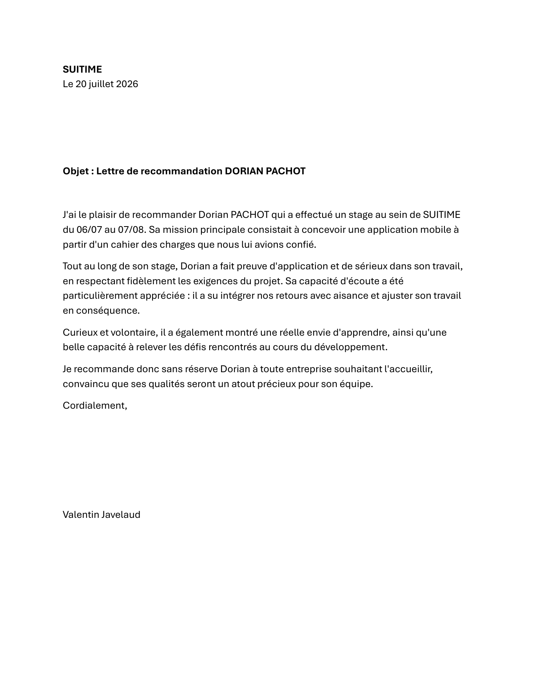
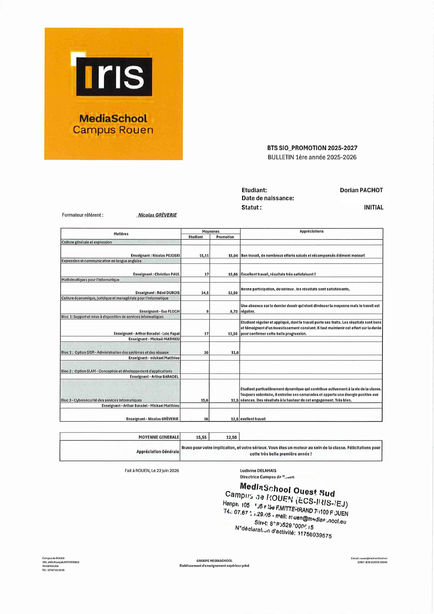
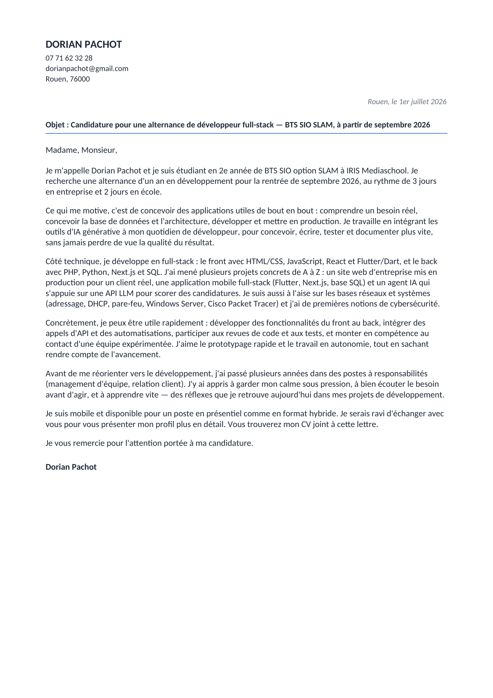

Retour à l'accueil
Documents
Mon dossier
Lettre de recommandation, bulletin de première année et lettre de motivation. Le CV a sa propre page.
Lettre de recommandation de Suitime
Écrite par Valentin Javelaud après mon stage, du 6 juillet au 7 août 2026, sur SYNCRO.

Suitime, 20 juillet 2026. Signature retirée pour la mise en ligne, original disponible sur demande.
Télécharger la lettreBulletin de première année
Année 2025-2026 à IRIS MediaSchool, campus de Rouen.

22 juin 2026. Date de naissance et signature retirées pour la mise en ligne.
Télécharger le bulletinLettre de motivation
Une lettre de base pour ma recherche d'alternance, que j'adapte à chaque entreprise.

Version de base.
Télécharger la lettre